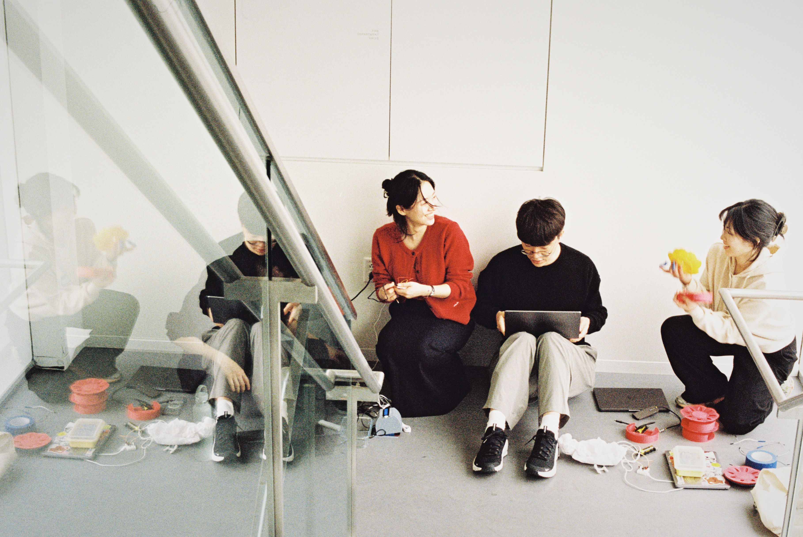
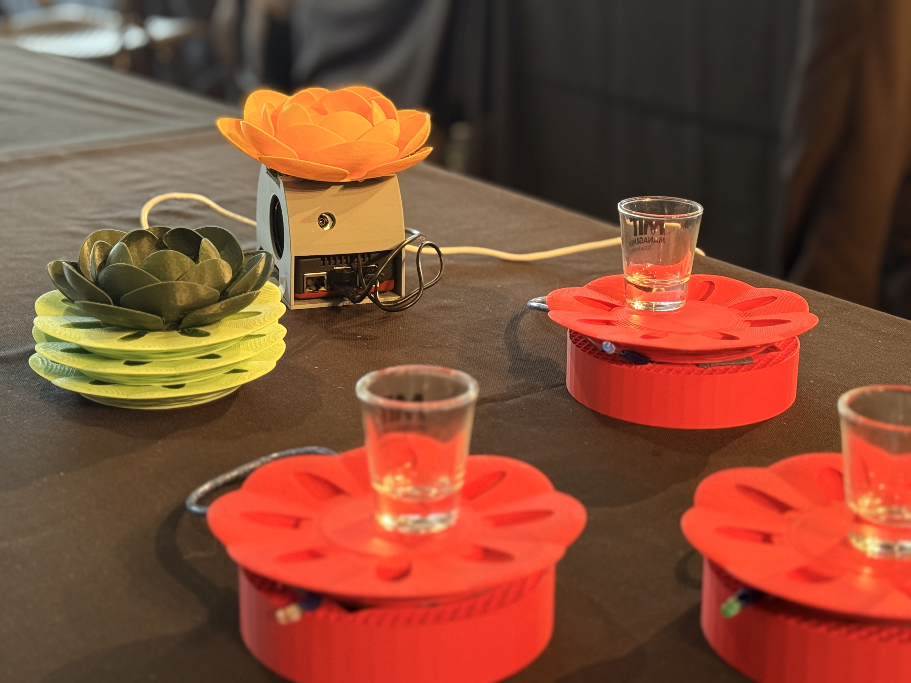
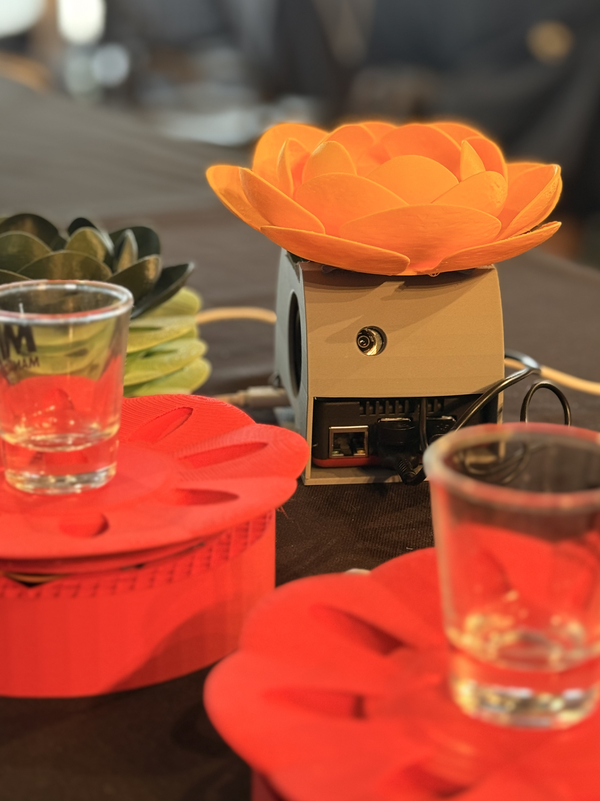
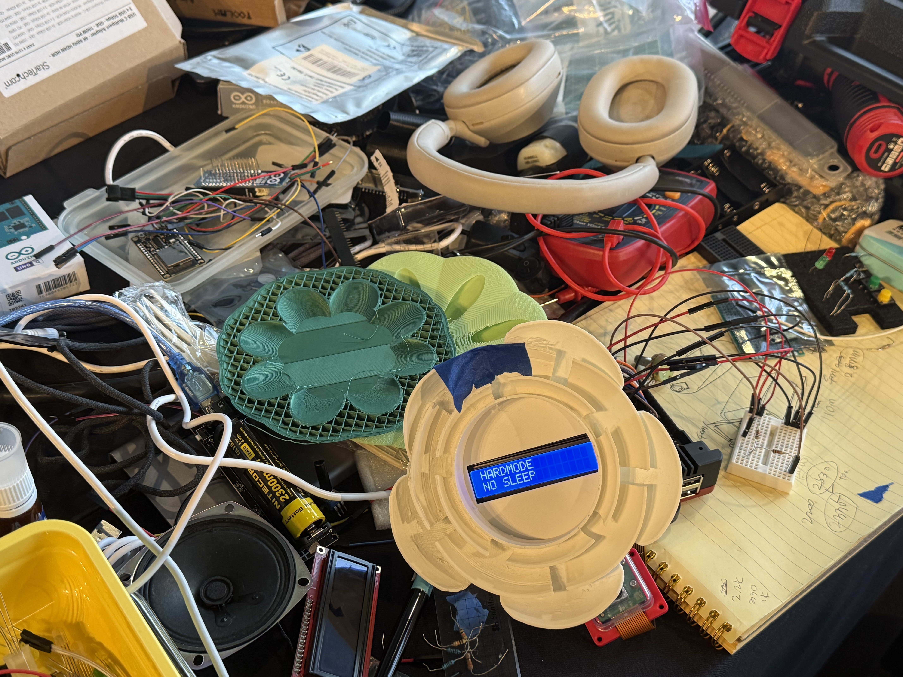
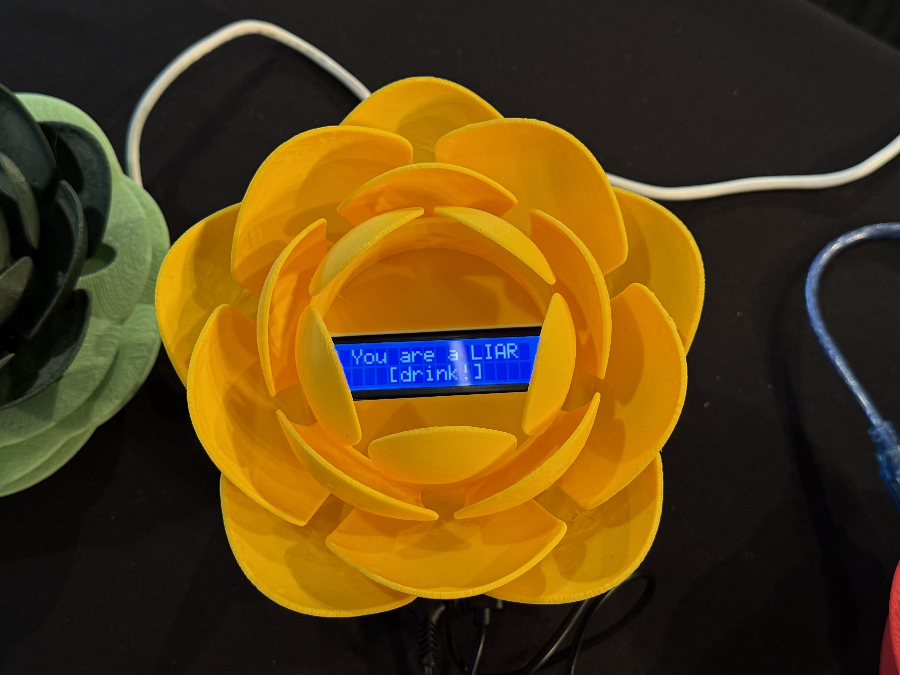
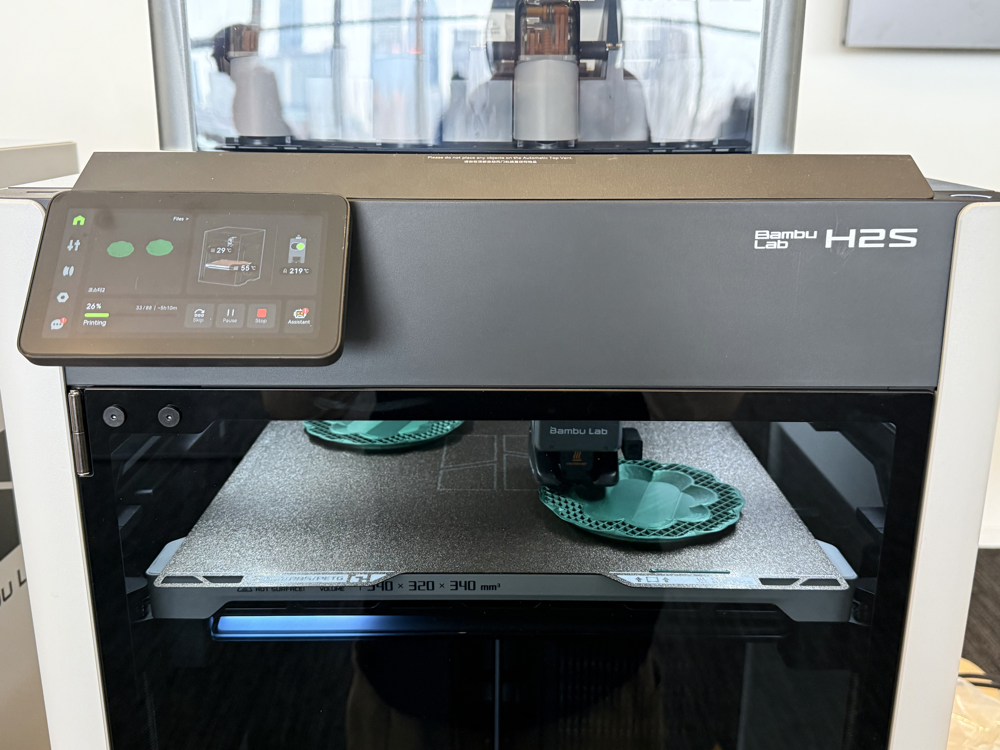

The Imposter AI
An AI-powered tabletop game system where the AI sits at the table as a full player, complete with a physical presence, a voice, and the ability to bluff.
✦ Built at MIT Hardmode Hackathon ↗ · DevPost ↗

Give AI a physical seat at the table and a real role in the game.
Party games often fall apart without enough people. We saw it as an opportunity to build an AI-powered tabletop gaming system that makes game nights more interactive, full, and fun.
Imposter was the natural choice.
There was also something fun about the contrast. Most AI today is built to be honest and helpful, and we built ours to lie on purpose, in context, and with wit.
See it in action!
The Build

01 Hardware
One hub, four coasters, all connected wirelessly.
The main hardware is a lotus flower shaped hub containing an LCD screen, camera, microphone, and speaker. These act as the communication interface between the AI and the players at the table. The hub runs on a Raspberry Pi, which handles communication with the AI backend and coordinates the overall game state.
Each leaf-shaped coaster is powered by an Arduino, which receives signals from the hub and drives the LEDs. The lights track whose turn it is, who is voting, and what the outcome is. The hub is the brain. The coasters are the nervous system.
LED signals on the coasters, driven by Arduino.
I was in charge of the hub hardware, wiring and testing each component.


02 AI
The LLM runs the game, sits at the table, and lies to your face.
The AI serves two roles at once. As host, an LLM manages the game flow, registers players, and moderates each round. As player, it listens to how the other humans respond, understands the rules and context of the current round, reads the lies others tell, and generates a witty lie of its own.
The AI runs the game and plays in it, competing by the same rules as everyone else.

03 Form
The physical form was built around a lotus motif, a traditional Korean symbol used as the centerpiece of a deception game.
In South Korea, Imposter is a popular social drinking game played at gatherings and game nights. The lotus is a traditional motif in Korean decorative culture, historically used in drinking cups and ceremonial design. The lotus also symbolizes honesty and purity, so using it as the centerpiece of a deception game was a deliberate and playful contradiction.
I modified existing lotus flower and leaf assets to fit cases for the hardware components inside. Starting from existing models was the practical call for a hackathon timeline.

Reflections
Challenges
- Wiring and testing every component correctly under a 24-hour deadline
- Designing a form that could make the game's social energy feel real and physical
- 3D modeling a sophisticated shape and fitting the hardware inside it
Accomplishments
- Hardware, AI, and visual design came together as one cohesive, playable system
- A physical object that gave the AI a distinct presence before it ever spoke
- Strong cross-disciplinary teamwork where each layer built on what the others made possible
Learnings
- The lotus, the coasters, the lights gave the AI a physical presence that felt real
- Embodiment changes how people engage. It was not a screen. It was a player taking its turn
Next Steps
From one game to an AI-powered social game platform.
This prototype showed that an AI can hold a social role at the table, run the game, and deceive the players around it. The next step is expanding to more game formats, from storytelling games to adaptive games that learn each player over time to party games that scale to any size.
The deeper goal is not a single product but a platform where AI becomes a recurring character at game night, one that people actually want back at the table.